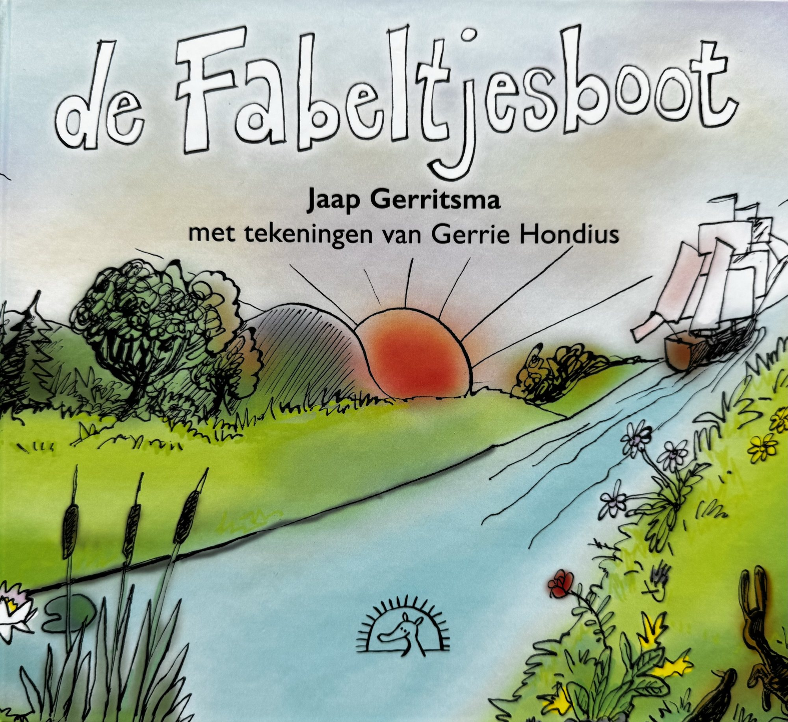
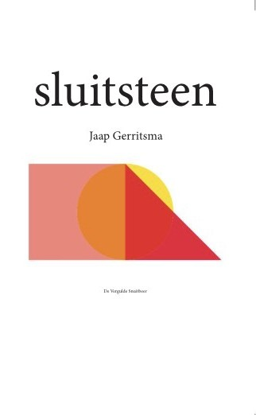
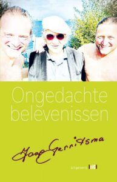
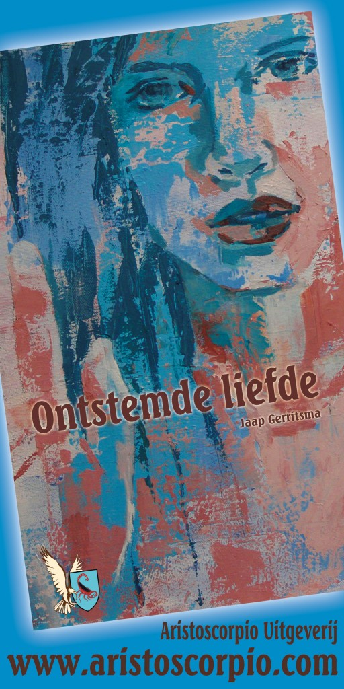
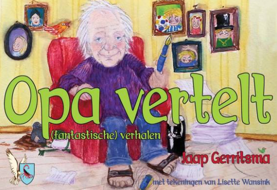
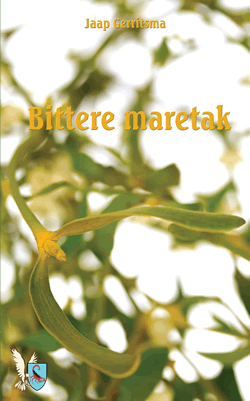
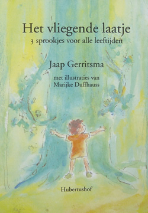

Romans, sprookjes en verhalen
Boeken

2024 · FabelsDe Fabeltjesboot
2023 · Korte verhalenSluitsteen
2022 · RomanOngedachte belevenissenKlabbertoetJaap Gerritsma2020 · RomanKlabbertoet
2015 · RomanOntstemde liefde
2015 · Fantastische verhalenOpa vertelt
2009 · RomanBittere maretak
2001 · SprookjesHet vliegende laatje